The breed database
Every livestock breed in Wildhearth, with the genes it tends towards (each animal varies around these: see genetics & breeding). Click a column to sort; click a breed to read about it.
Read more in the Cattle Breeds.


At a glance
Read more in the Pig Breeds.


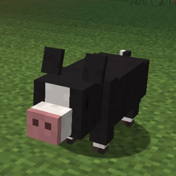

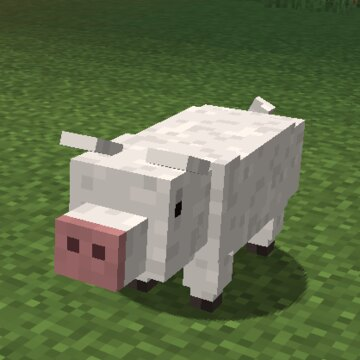
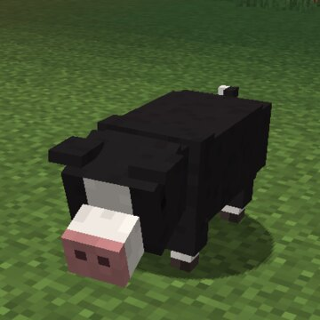
At a glance
| Breed | Kind | Perk | Size | Growth | Fertility | Litter |
|---|---|---|---|---|---|---|
| Yorkshire | Prolific | - | ||||
| Landrace | Prolific | Feed-efficient | ||||
| Duroc | Meaty | - | ||||
| Hampshire | Meaty | Hardy | ||||
| Pietrain | Meaty | - | ||||
| Berkshire | Heritage | Flavourful | ||||
| Tamworth | Heritage | Forager | ||||
| Chester White | Prolific | - | ||||
| Poland China | Heritage | Hybrid vigour |
Read more in the Poultry Breeds.


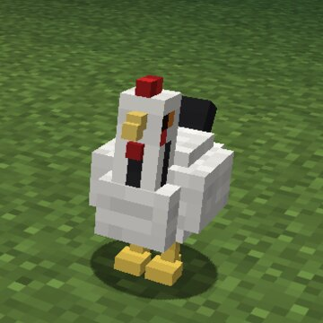


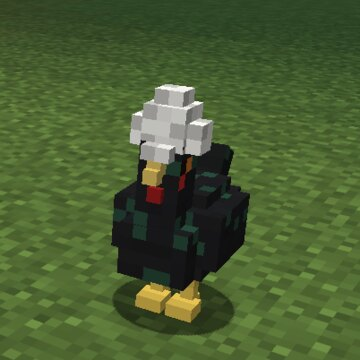


At a glance
| Breed | Kind | Perk | Size | Growth | Fertility | Laying |
|---|---|---|---|---|---|---|
| Leghorn | Egg layer | - | ||||
| Isa Brown | Egg layer | - | ||||
| Cornish | Meat bird | - | ||||
| Brahma | Meat bird | - | ||||
| Jersey Giant | Meat bird | - | ||||
| Rhode Island Red | Dual-purpose | - | ||||
| Sussex | Dual-purpose | - | ||||
| Barred Rock | Dual-purpose | - | ||||
| Australorp | Dual-purpose | - | ||||
| Silkie | Ornamental | Broody | ||||
| Polish | Ornamental | Fine feathers | ||||
| Sebright | Ornamental | Fine feathers | ||||
| Cochin | Ornamental | Fine feathers | ||||
| Ameraucana | Egg layer | - | ||||
| Marans | Egg layer | - |
Read more in the Sheep Breeds.
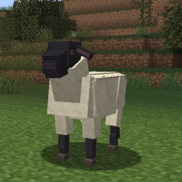
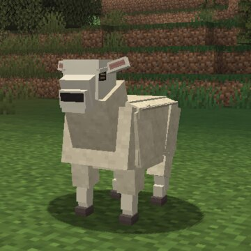
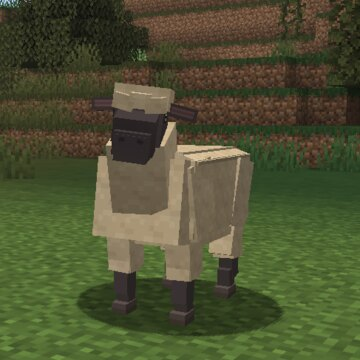

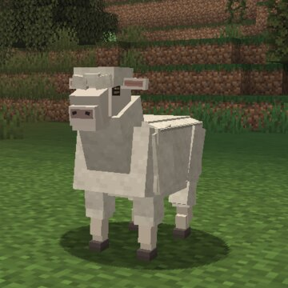
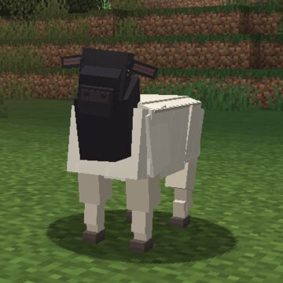
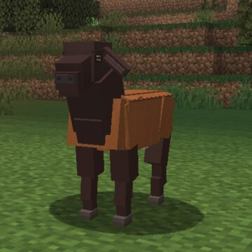


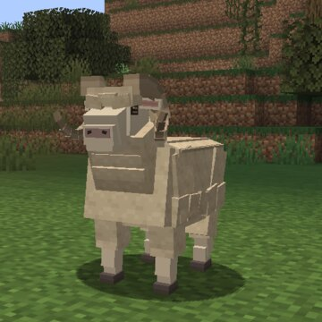
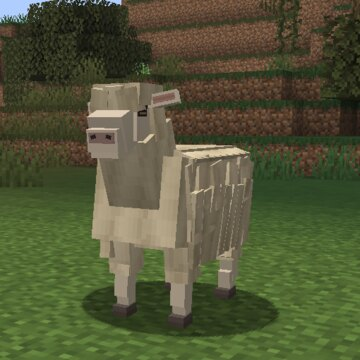
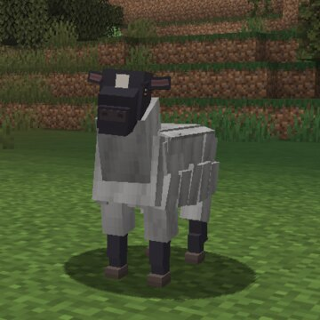

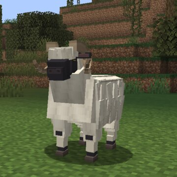
Valais Blacknose
Size
Growth
Fertility
Fleece
horned rams and ewes · white wool · cold lands · hardy (1.2× health)
At a glance
| Breed | Kind | Perk | Size | Growth | Fertility | Fleece |
|---|---|---|---|---|---|---|
| Suffolk | Meat | Quick-finishing lambs | ||||
| Texel | Meat | Heavily muscled | ||||
| Hampshire Down | Meat | Hardy | ||||
| Charollais | Meat | Easy lambing | ||||
| Île de France | Meat | Meat and wool | ||||
| Dorper | Hair sheep | Sheds its coat | ||||
| Santa Inês | Hair sheep | Sheds its coat | ||||
| East Friesian | Dairy | Milking ewes | ||||
| Merino | Wool | Fine fleece | ||||
| Lincoln | Wool | Longwool | ||||
| Romanov | Wool | Twins and triplets | ||||
| Valais Blacknose | Wool | Gentle |
Read more in the Poultry Breeds.

Coturnix quail
lays every 120s

Bobwhite quail
lays every 240s

California quail
lays every 240s · head plume

Button quail
lays every 180s · tiny